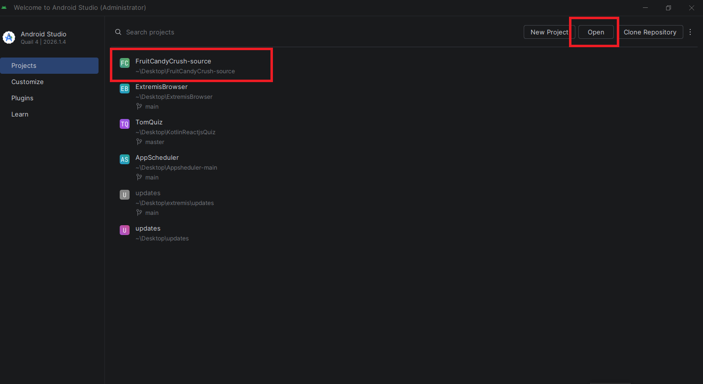
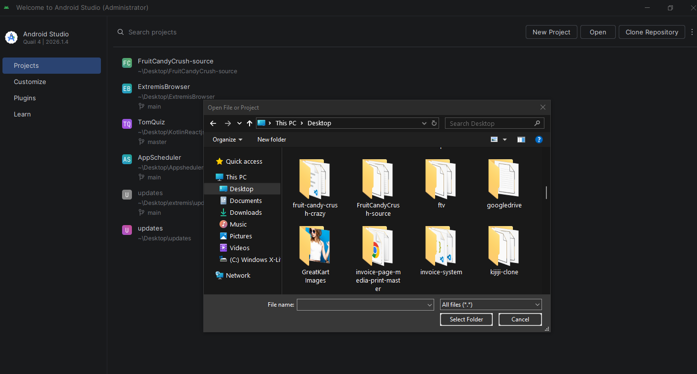
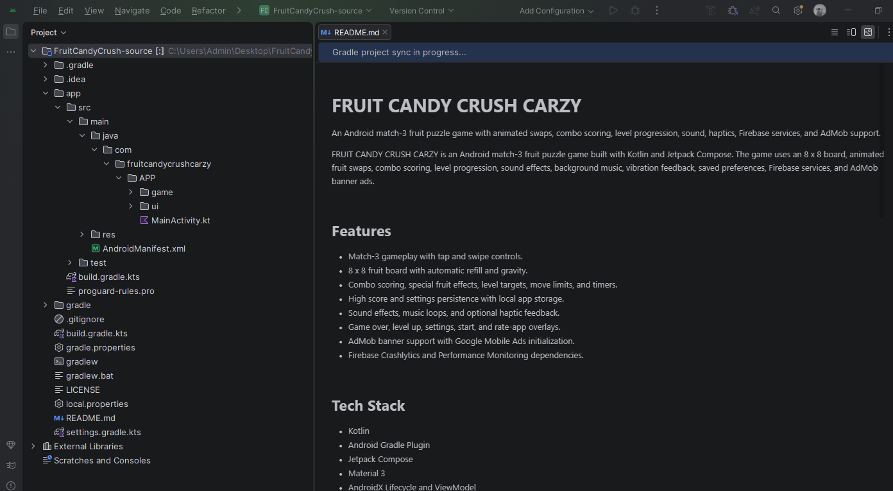
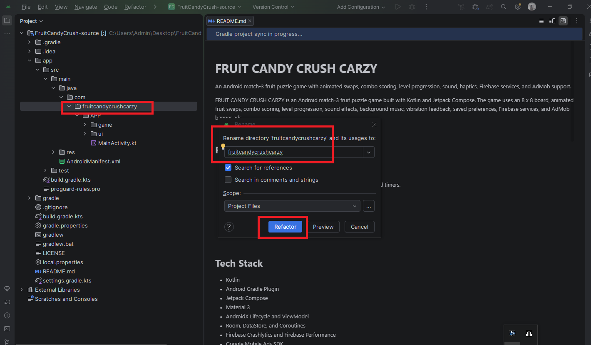
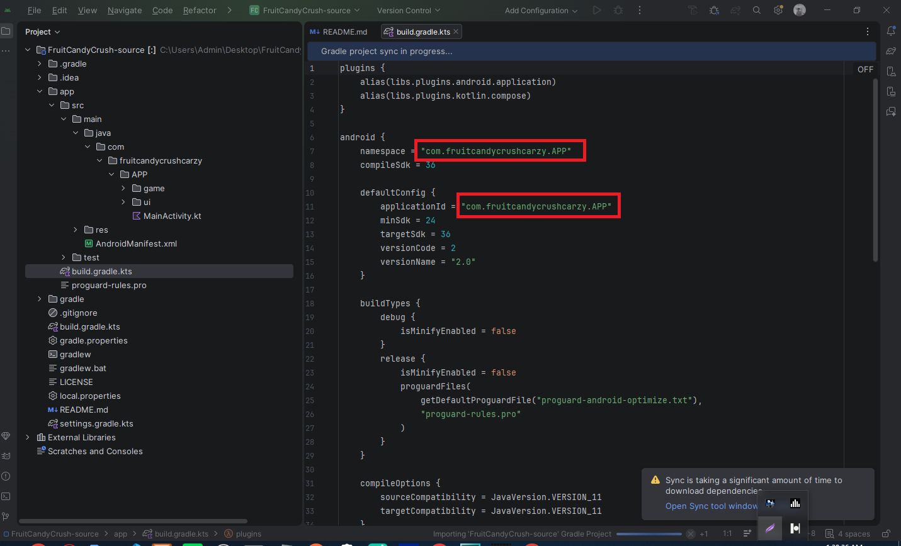
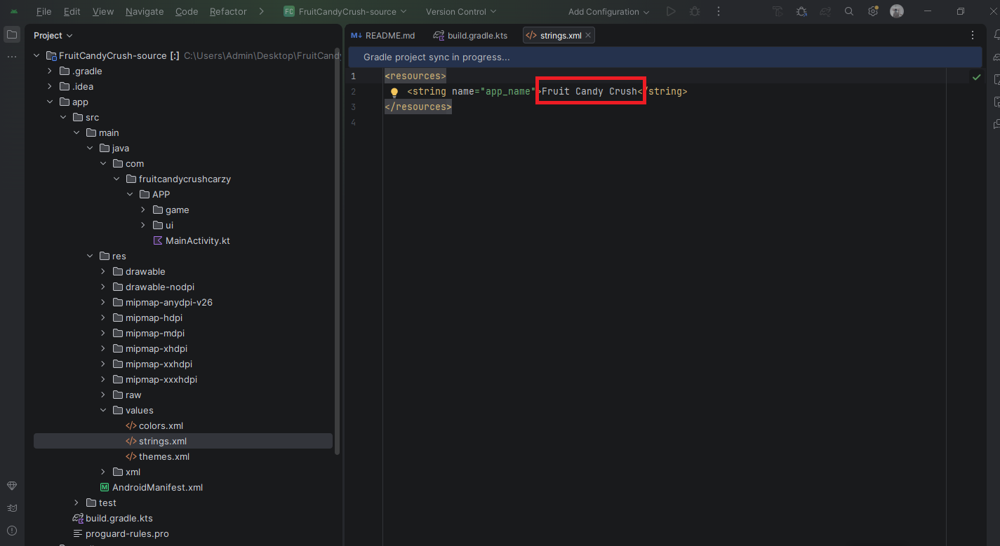

Match-3 gameplay
Tap and swipe controls are used to exchange adjacent candies and create matches.
Documentation for an Android match-3 candy puzzle game built with Kotlin and Jetpack Compose.
Version 1.0.0 · Android Studio / GradleSugarPop Blast is an Android match-3 candy puzzle game. The project presents an 8 × 8 board with animated candy swaps, combo scoring, level progression, sound, haptics, and locally saved player progress.
Tap and swipe controls are used to exchange adjacent candies and create matches.
An 8 × 8 candy board supports automatic refill and gravity after matches clear.
Combo scoring, special candy effects, levels, move limits, timers, and level-up states are supported.
Sound effects, music loops, optional vibration feedback, and game-state overlays enrich play.
High scores and settings are retained with local application storage.
The project uses Android, Kotlin, Compose, lifecycle, and test libraries declared by the app module.
The project is organized as a modern Android application using Kotlin and Jetpack Compose.
Player progress and settings use Android SharedPreferences. This release is offline-only: Firebase, AdMob, Retrofit, OkHttp, Moshi, CameraX, location, Room, and DataStore are not included as dependencies and no service credentials are shipped.
From the Welcome screen, choose Open to browse for an existing project.
Select the SugarPop Blast project folder and confirm with Select Folder.
Android Studio imports the project and resolves its Gradle configuration. The IDE may display a sync-in-progress banner while dependencies are downloaded.
Use the Project panel to inspect app/src/main, the Kotlin package, resources, tests, and the root Gradle files.
The package is split into game and ui areas, with MainActivity.kt acting as the application entry point shown in the Android Studio project tree.
These are three different values:
The Kotlin and Java code namespace, currently com.sugarpopblast. It controls package declarations and source folders.
The unique Android app identifier used when installing or publishing. It is configured as applicationId in app/build.gradle.kts.
The name users see below the launcher icon and in Android settings. It is normally the app_name string in app/src/main/res/values/strings.xml.
Changing the app name does not change the package or application ID. Changing the application ID can make Android treat the result as a different application.
In app/build.gradle.kts, update the install and publishing identity:
Open app/src/main/res/values/strings.xml and change the text inside app_name:
Then confirm AndroidManifest.xml uses android:label="@string/app_name" rather than a different hard-coded label.
The module build file uses the Android application and Kotlin Compose plugins. The supplied screenshot shows the following application settings:
Debug builds keep minification disabled. Release builds also show minification disabled in the screenshot and reference the default Android optimize file together with proguard-rules.pro.
Android resources live under app/src/main/res. The visible resource tree includes drawable, mipmap density folders, raw assets, values, and XML resources.
The application label is SugarPop Blast.
Colors, strings, and themes are grouped under the values resource directory.
Launcher icon resources are organized by Android density.
The manifest is located directly inside app/src/main and defines application metadata.
Replace candy artwork in app/src/main/res/drawable-nodpi. Keep lowercase resource names using letters, numbers, and underscores, for example candy_blue.png, stripe_blue.png, and color_bomb.png. Update the resource mapping in ui/CandyArt.kt when adding or renaming a candy.
Change colors and theme values in app/src/main/res/values/colors.xml and ui/Theme.kt. Replace the launcher artwork in the mipmap-* folders and the adaptive icon files under res/drawable. Keep all artwork original or include a commercial redistribution license.
Backgrounds and other UI images belong in res/drawable. Use a matching resource name in the Kotlin UI code and test both light and dark device configurations.
The board dimensions, move limits, timers, targets, and level count are defined in game/Levels.kt and the related model values in game/GameModels.kt. For example, change the board configuration from 8 × 8 to 9 × 9 only after checking the board layout and test cases. Change a level's move limit or score target in its LevelConfig; then run the unit tests and play the affected level.
MainActivity.kt creates the application screens and shared state. GameViewModel.kt exposes state and handles user actions. MatchEngine.kt performs swaps, matches, gravity, refill, and scoring. Compose files in ui/ render state and send gestures back to the ViewModel. ProgressStore.kt persists local progress; SoundFx.kt loads audio from res/raw.
This source release does not include Firebase, AdMob, network clients, analytics, or a google-services.json file. It is an offline game. If you add Firebase or AdMob in your own app, create your own accounts and credentials, document the integration, and never ship the author's credentials.
Before publishing, replace any music or artwork for which you cannot show a license allowing redistribution inside a commercial source-code item. Add an ASSET_LICENSES.md file containing the creator, source URL, license, and attribution for every third-party asset.
Use screenshots captured from the current SugarPop Blast build. Do not include pre-rebrand IDE screenshots in the marketplace preview. Add separate in-game images for the board, match animation, level-up, game-over, and settings states. Marketplace screenshots must follow the dimensions stated in the reviewer message.





